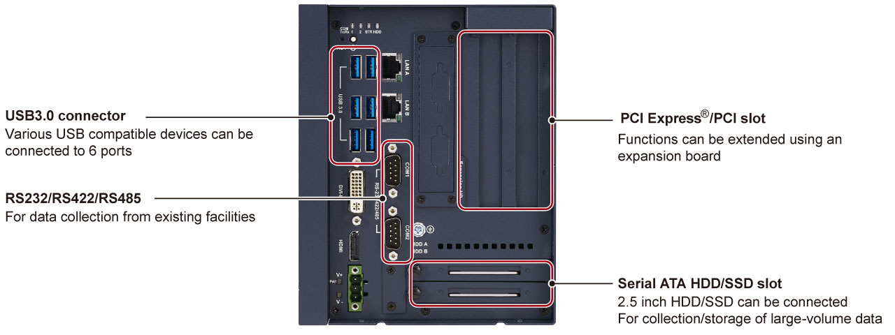

Industrial Computer MELIPC Series
MELIPC MI2000 -Product features-


Data analysis/diagnosis/monitoring
Intel® Core™ i3 CPU realizes simple analysis/diagnosis/monitoring of collected data, contributing to quality improvement.
Flexible system expansion
Equipped with 2.5-inch HDD/SSD slot and PCI Express®/PCI slot, a large volume of data can be stored and functions can be extended. Fitting the CC-Link IE Field Network interface board to the PCI Express® slot allows the module to operate as a CC-Link IE Field Network master station or local station.
Various expandable interfaces easily realize coordination with the existing system and FA devices.

Fan-less hardware design reduces maintenance
MI2000 has a fan-less structure. Maintenance such as replacement and cleaning is not required.